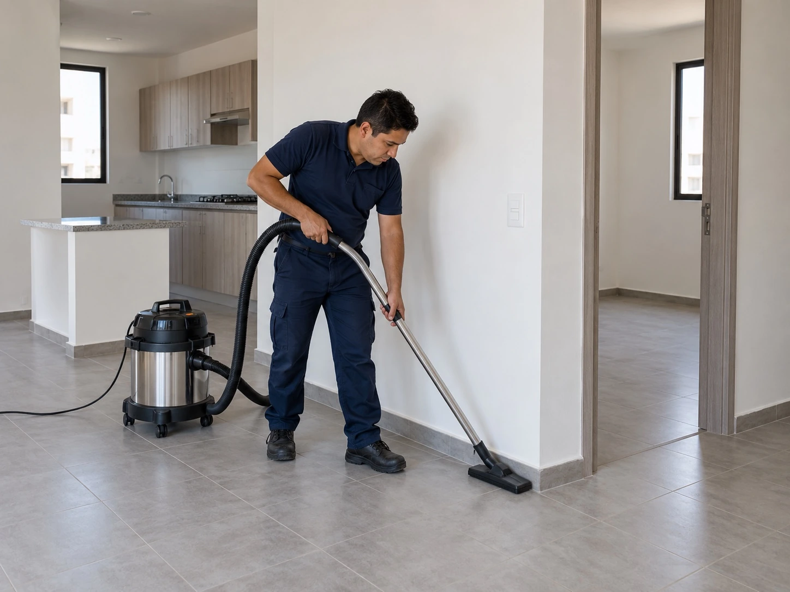

Clean Spaces
I manage an apartment building, they just finished painting one of the apartments and I forgot to schedule the cleaning. The new tenant moves in soon, what should I do?

If time is limited, focus first on the areas the new tenant will notice and use immediately, then schedule any secondary detailing if needed.
Confirm the apartment is ready to be cleaned
Make sure painters and maintenance staff are actually finished. If workers are still sanding, touching up, or carrying materials through the unit, detailed cleaning can be undone quickly. Ask for a clear handoff time.
Focus on move in readiness
The apartment should feel clean when the tenant opens the door. That means floors, kitchen surfaces, bathroom fixtures, cabinets, glass, and visible dust should be addressed. Paint splatter or construction residue should be flagged so it can be handled properly.
Use the empty unit to your advantage
A vacant apartment is easier to clean than one filled with furniture. If possible, complete the cleaning before the tenant starts moving boxes in. This gives the team clear access to floors, closets, cabinets, windows, and corners.
Build a turnover checklist for the next unit
Once the immediate issue is solved, create a simple sequence for future turnovers. Repairs, painting, final maintenance, cleaning, inspection, and move in should each have a clear place in the schedule so cleaning is not forgotten at the end.